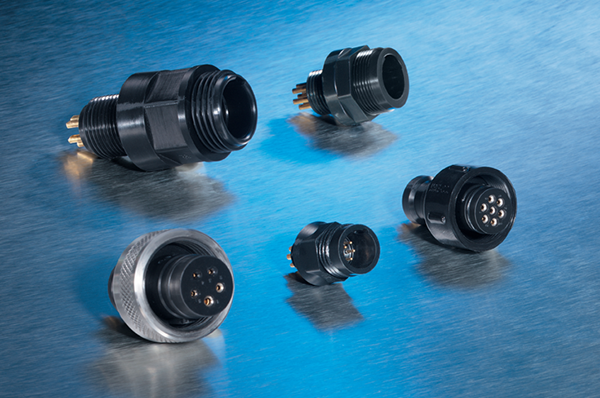
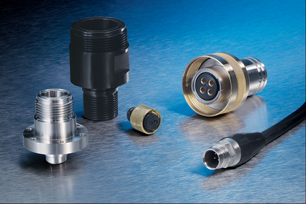
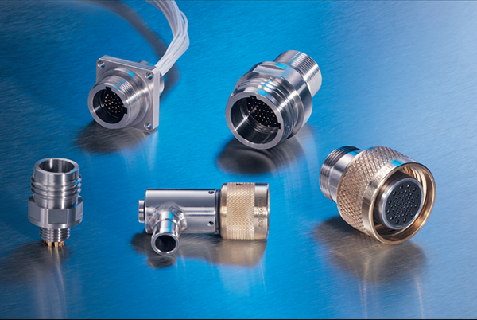
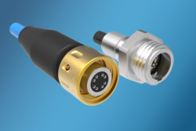
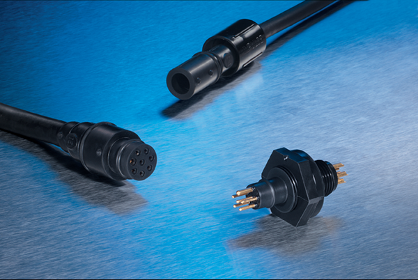
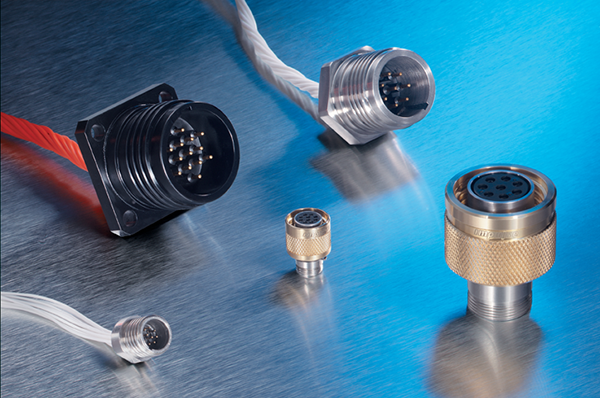
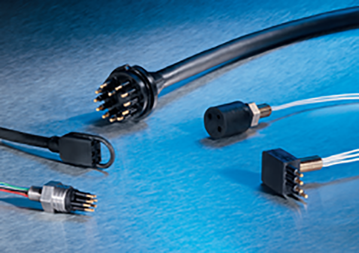
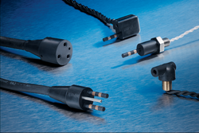

TELEDYNE IMPULSE 수중 커넥터
Dry Mate Connectors
-

Glass Reinforced Epoxy (GRE)
Connector -

IE55 Rubber Molded
Metal Shell Connector -

Metal Shell
Connector Series -

Miniature High Density (MHD)
Metal Shell Connector -

Net Series 1 Gigabit Ethernet
Connector -

Rubber Molded GRE
Connectors
Splash Mate Connectors
-

Metal Key Titan
Connector Series -

Splash Mate Series
Wet Mate Connectors
-

Wet Mate Series